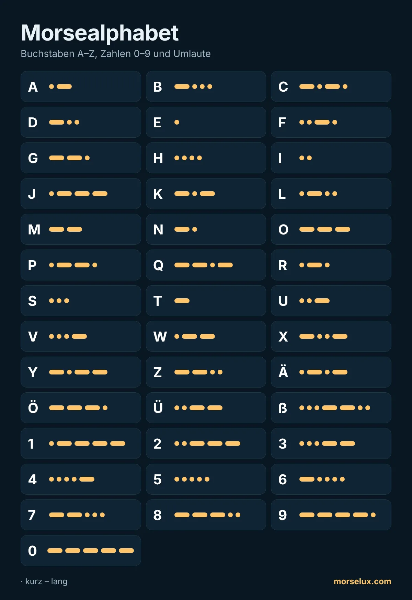

- Hören statt zählen. Bei echtem Tempo kann man Punkte und Striche nicht zählen – man hört jeden Buchstaben als ein Klangmuster.
- Gegenstücke helfen: A (·–) und N (–·), D (–··) und U (··–), G (––·) und W (·––) sind Spiegelbilder.
- Kurz und oft üben. Zehn bis fünfzehn Minuten am Tag bringen mehr als eine lange Einheit pro Woche.
- Anwenden. Tipp ein Wort in den Morse-Übersetzer und versuche, die Buchstaben zu hören, bevor du sie liest.
MorseLux › Morsealphabet
·–·· ··– –··– Tabelle · zum Anhören
Morsealphabet
Alle Buchstaben, Zahlen und Satzzeichen des internationalen Morsecodes – mit Umlauten. Tippe auf ein Zeichen, um zu hören, wie es klingt. So lernt man Morsen wirklich.
Morsealphabet: Buchstaben A–Z
Zahlen in Morsecode (0–9)
Zahlen haben immer fünf Signale und sind deshalb leicht zu lernen: 1 bis 5 beginnen mit Punkten, 6 bis 0 mit Strichen.

Umlaute und Sonderzeichen
Diese Buchstaben gehören zum erweiterten Morsecode. Kennt der Empfänger sie nicht, schreibt man AE, OE, UE und SS.
| Zeichen | Morse | Anhören |
|---|---|---|
| Ä | ·–·– | |
| Ö | –––· | |
| Ü | ··–– | |
| ß | ···––·· | |
| Ñ | ––·–– | |
| É | ··–·· | |
| À | ·––·– | |
| È | ·–··– | |
| Ç | –·–·· | |
| Ğ | ––·–· | |
| Ş | ·––·· |
Satzzeichen
| Zeichen | Morse | Anhören |
|---|---|---|
| . | ·–·–·– | |
| , | ––··–– | |
| ? | ··––·· | |
| ' | ·––––· | |
| ! | –·–·–– | |
| / | –··–· | |
| ( | –·––· | |
| ) | –·––·– | |
| & | ·–··· | |
| : | –––··· | |
| ; | –·–·–· | |
| = | –···– | |
| + | ·–·–· | |
| - | –····– | |
| _ | ··––·– | |
| " | ·–··–· | |
| $ | ···–··– | |
| @ | ·––·–· |
Tipps zum Lernen des Morsealphabets
Häufige Fragen
Wie viele Zeichen hat das Morsealphabet?
Der internationale Morsecode hat Zeichen für die 26 Buchstaben A–Z, die zehn Ziffern 0–9 und die üblichen Satzzeichen; einige davon (! $ ; _) sind gebräuchlich, aber nicht ITU-genormt. Für das Deutsche kommen Ä, Ö, Ü und ß hinzu.
Wie lernt man das Morsealphabet am schnellsten?
Über den Klang, nicht über das Bild. Hör jeden Buchstaben als einen Rhythmus, statt Punkte und Striche zu zählen, und beginne mit nur zwei Buchstaben (E und T). Die Schritt-für-Schritt-Anleitung erklärt, wie es geht. Üben kannst du gleich im kostenlosen Morse-Trainer.
Wie morst man Ä, Ö, Ü und ß?
Ä = ·–·– Ö = –––· Ü = ··–– und ß = ···––·· Kennt der Empfänger diese Zeichen nicht, schreibt man AE, OE, UE und SS.
Welche Morsezeichen sind am kürzesten?
E (·) und T (–), weil sie im Englischen am häufigsten vorkommen. Danach folgen I (··), A (·–), N (–·) und M (––) mit je zwei Signalen.
Gibt es ein Morsezeichen für das Leerzeichen?
Nein, ein Leerzeichen ist eine Pause. Zwischen Buchstaben wartet man drei Einheiten, zwischen Wörtern sieben. Geschrieben trennt man Buchstaben mit einem Leerzeichen und Wörter mit einem Schrägstrich (/).
Kann ich die Morsetabelle ausdrucken?
Ja. Lade dir das kostenlose A4-PDF mit allen Buchstaben, Zahlen, Umlauten und Zeichen herunter, oder nutze die Druckfunktion deines Browsers (Strg+P oder ⌘P).
Wie sieht SOS im Morsealphabet aus?
··· ––– ··· – drei kurz, drei lang, drei kurz, ohne Pausen gesendet. Mehr dazu auf der Seite SOS in Morsecode.
Wie merke ich mir die Zahlen im Morsecode?
Zahlen haben immer fünf Zeichen: 1 bis 5 beginnen mit Punkten (1 = ·–––– 5 = ·····), 6 bis 0 mit Strichen (6 = –···· 0 = –––––). Das Muster ist leicht zu merken.